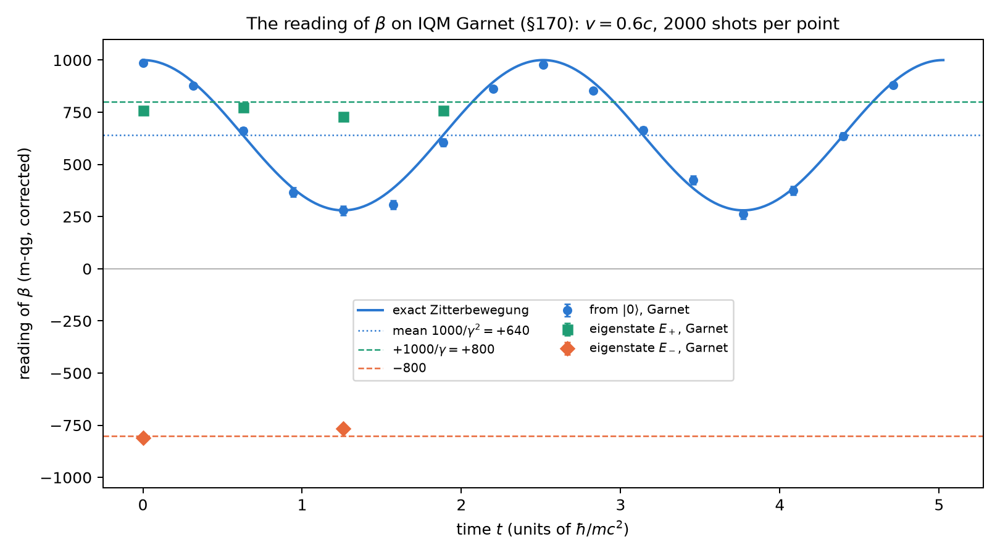

Appendix G — Relativistic energy and antimatter as qang readings
Chapter 1 left the extension of the qang scale to \(E=mc^2\) and to antimatter as an unverified proposal (Section 1.4.1). This appendix develops it with the probability equations of Chapter 1, and separates carefully what is exact from what remains a proposed reading. The central result is exact, although known: for a free Dirac particle, the expectation value of the matrix \(\beta\) is \(mc^2/E\). Since \(\beta\) has eigenvalues \(\pm1\), like \(\sigma_z\), that expectation value is a \(qg_Z\), and all of Chapter 1 applies to it: it has a probability, a qang angle, an m-qg reading and an error bar. Every figure comes from tools/verify_apendice_g.py (25 claims, all pass), and nothing below is new physics.
G.1 The relativistic angle
Dividing \(E^2=(mc^2)^2+(pc)^2\) by \(E^2\) gives a Pythagorean identity, which defines an angle \(\theta_r\):
\[ \cos\theta_r=\frac{mc^2}{E}=\frac1\gamma,\qquad \sin\theta_r=\frac{pc}{E}=\beta,\qquad \tan\theta_r=\beta\gamma=\frac{p}{mc}, \qquad E=\frac{mc^2}{\cos\theta_r}. \]
At rest \(\theta_r=0\) and the formula gives \(E=mc^2\). When \(\beta\to1\), \(\theta_r\to90^\circ=250\) qga and \(E=pc\): the limit of light, with no rest mass. On the angular scale of Chapter 1 (Section 1.4), \(E=mc^2/\cos(2\pi\,\theta_{r,qga}/1000)\). Table G.1 gives some values.
| \(\beta\) | \(\gamma\) | \(\theta_r\) | \(\theta_r\) (qga) | \(1000/\gamma\) (m-qg) | \(T/mc^2=\gamma-1\) |
|---|---|---|---|---|---|
| 0 | 1 | \(0^\circ\) | 0 | \(+1000\) | 0 |
| 0.5 | 1.155 | \(30^\circ\) | 83.3 | \(+866.0\) | 0.155 |
| 0.6 | 1.25 | \(36.87^\circ\) | 102.4 | \(+800.0\) | 0.25 |
| 0.8 | 1.667 | \(53.13^\circ\) | 147.6 | \(+600.0\) | 0.667 |
| 0.99 | 7.089 | \(81.89^\circ\) | 227.5 | \(+141.1\) | 6.089 |
| 0.999 | 22.37 | \(87.44^\circ\) | 242.9 | \(+44.7\) | 21.37 |
The angle \(\theta_r\) is not the rapidity \(\eta\) (\(\beta=\tanh\eta\)): they are related by \(\cos\theta_r=1/\cosh\eta\), the Gudermann function. Rapidities add for collinear boosts; angles do not. Two boosts of \(0.6c\) give \(\beta=0.8824\) and \(\gamma=2.125\), that is, \(\theta_r=61.93^\circ=172.0\) qga, not the sum \(2\times102.4=204.8\) qga. The qga scale measures the angle, but does not make it additive.
G.2 \(E=mc^2\) as a reading: the expectation value of \(\beta\)
In the free Dirac equation, \(H=c\,\vec\alpha\cdot\vec p+\beta\,mc^2\). By the Hellmann–Feynman theorem (Feynman 1939), differentiating an eigenvalue with respect to a parameter gives the expectation value of the derivative of the Hamiltonian: \(\partial E/\partial(mc^2)=\langle\beta\rangle\). Since \(E=\pm\sqrt{(pc)^2+(mc^2)^2}\),
\[ \boxed{\;\langle\beta\rangle=\frac{mc^2}{E}=\cos\theta_r\;} \]
in every free eigenstate, with the sign of \(E\). The script checks it on 1200 random eigenstates of both branches, to \(2\cdot10^{-15}\). The matrix \(\beta\) has eigenvalues \(\pm1\), so \(\langle\beta\rangle\) is a \(qg_Z\). In the usual encoding of the bispinor in two qubits it is literally the \(Z\) of the first one, \(\beta=\sigma_z\otimes I\), and Qiskit confirms it: the \(qg_Z\) of that qubit is \(mc^2/E\). Call that qubit the \(\beta\) qubit. The probability equation of Chapter 1 gives it its four readings:
\[ p_0=\frac{E+mc^2}{2E}=\cos^2\frac{\theta_r}{2},\qquad p_1=\frac{E-mc^2}{2E}=\frac{T}{2E},\qquad m=1000\,\frac{mc^2}{E}=\frac{1000}{\gamma}\ \text{m-qg},\qquad \theta=\theta_r . \]
Read backwards, it is a way of writing the energy: \(E=mc^2/qg_Z=1000\,mc^2/m\), and the kinetic energy is \(T=2E\,p_1\). \(E=mc^2\) is the pole: at rest, \(m=+1000\) m-qg, \(p_1=0\), no kinetic energy. Light is on the equator. A particle at \(0.6c\) reads \(+800\) m-qg, with \(p_0=0.9\); at \(0.99c\), \(+141.1\) m-qg.
Two caveats. First, the reading does not depend on the representation: \(\langle\beta\rangle=\bar\psi\psi/\psi^\dagger\psi\) is a Lorentz scalar divided by a density, and in the chiral representation, where \(\beta\) is not diagonal, it gives the same (checked). What does depend on the representation is the picture of \(p_0\) and \(p_1\) as the weights of the “large” and “small” components of the spinor, which only holds in the standard Dirac representation. Second, the \(\beta\) qubit is a reading of a simulation of the Dirac equation, like those with trapped ions (Gerritsma et al. 2010): in a particle physics laboratory nobody measures \(\beta\) shot by shot.
G.3 Antimatter: the negative branch and charge conjugation
On the negative-energy branch the same identity gives \(\langle\beta\rangle=-mc^2/\lvert E\rvert\): the reading is \(m=-1000/\gamma\), the mirror of the positive branch’s reading through the equator. Dirac (1928) found those solutions, and Feynman’s reinterpretation (Feynman 1949) reads them as positive-energy antiparticles travelling forward in time. In qang the branch of the solution shows in the sign of the reading of the \(\beta\) qubit: northern hemisphere, the positive branch; southern hemisphere, the negative one.
The symmetry that goes from one branch to the other is charge conjugation \(C\), \(\psi\mapsto i\gamma^2\psi^*\). The script checks that \(C\) takes an energy \(+E\) eigenstate of \(H(\vec p)\) to an energy \(-E\) eigenstate of \(H(-\vec p)\), that it inverts the reading, \(m\mapsto-m\), and that parity \(P\) and time reversal \(T\) preserve it. Hence \(CPT\) inverts it too. In the angle of the \(\beta\) qubit, \(C\) is the reflection \(\theta_{qga}\mapsto500-\theta_{qga}\); for the reading it is the same as half a turn, \(\theta_{qga}\mapsto\theta_{qga}+500\).
This recovers, corrected, what the source document claimed: that \(CPT\) “induces an angular translation of 500 qg”. There is a correct core: charge conjugation, and with it \(CPT\), acts on the \(\beta\) reading as half a turn in qga. But it is not a translation of the state: it is a reflection of its reading. And it is true, as the document says, that the probability density does not change: \(i\gamma^2\) is unitary, so \(\psi^{c\dagger}\psi^c=\psi^\dagger\psi\) point by point (checked).
G.4 The probabilities of the source document
The source document uses another pair of probabilities, \(P_\text{rest}=(mc^2/E)^2\) and \(P_\text{kinetic}=\beta^2\). They also add to 1, by the Pythagorean identity, and they are also a qubit, but with twice the angle: \(R_y(2\theta_r)|0\rangle\) gives \(p_0=1/\gamma^2\) and \(p_1=\beta^2\) (QuTiP). Call it the Pythagoras qubit. That factor 2 is the one Chapter 1 flagged as an error. Neither formula is wrong; they are two different qubits for the same particle:
| angle | \(p_0\) | \(p_1\) | at \(0.6c\) | |
|---|---|---|---|---|
| \(\beta\) qubit (expectation value of \(\beta\)) | \(\theta_r\) | \((E+mc^2)/2E\) | \(T/2E\) | \(p_0=0.9\); 102.4 qga |
| Pythagoras qubit (split of \(E^2\)) | \(2\theta_r\) | \((mc^2/E)^2\) | \(\beta^2\) | \(p_0=0.64\); 204.8 qga |
Only the first is the expectation value of an observable of the Dirac equation. The second splits \(E^2\) into two squares: a well-defined probability, but with no observable behind it.
G.5 Measuring the relativistic angle with shots
If the angle \(\theta_r\) is encoded in a qubit, with \(R_y(\theta_r)\) and \(qg_Z=1/\gamma\), Chapter 1 says what reading it costs. Since the qang angle is the arcsine transformation, \(\sigma(\theta_r)=1/\sqrt N\) for any velocity, that is, \(159.15/\sqrt N\) qga. The velocity, \(\beta=\sin\theta_r\), then has \(\sigma(\beta)=1/(\gamma\sqrt N)\): it is resolved better the faster the particle. With 1000 shots the angle has 5.03 qga of uncertainty over the whole range, and at \(0.99c\) the velocity is resolved to \(0.0045\). The script checks it by sampling in Qiskit at \(0.3c\), \(0.6c\) and \(0.9c\).
G.6 The reading of \(\beta\) on a real chip (§170)
In one dimension and at fixed momentum the Dirac Hamiltonian is a single qubit, \(H=p\,X+m\,Z\) with \(\beta=Z\), so the \(\beta\) qubit can be prepared and read on one physical qubit. With \(m=1\) and \(p=0.75\), \(E=1.25\), \(v=0.6c\), \(\gamma=1.25\) and \(\theta_r=102.4\) qga. The exact readings: the positive-energy eigenstate, \(R_y(\theta_r)|0\rangle\), reads \(+800\) m-qg at every time; the negative-energy one reads \(-800\). The state \(|0\rangle\) mixes both branches instead, and its reading oscillates at frequency \(2E\) between \(+1000\) and \(+280\) m-qg around \(1000/\gamma^2=+640\): the Zitterbewegung, Dirac’s trembling motion. That mean, \(1000\,(mc^2/E)^2\), is the source document’s \(P_\text{rest}\) (Section G.4): the document’s probability is the time average of the \(\beta\) reading.
It ran on IQM Garnet, qubit 0: 24 circuits of 2000 shots in one 32 s job, with the readout corrected from the poles (\(e_0=0.0030\), \(e_1=0.0265\)). The five predictions were frozen before the run (the sha256 of the file was committed to the repository before the job; Chapter 28). They carry a 60 m-qg systematic allowance taken from §168, where \(R_y\) read low at intermediate angles.
| prediction | measured (m-qg, corrected) | predicted | verdict |
|---|---|---|---|
| Z1: \(E_+\) at \(t=0\) | \(+759.9\pm14.9\) | \(+800\) | pass (\(z=-2.7\); also without the allowance) |
| Z2: \(E_-\) at \(t=0\); \(C\) reflection | \(-809.4\pm14.9\); \(-49.5\) | \(-800\); 0 | pass (within \(3\sigma\) without the allowance) |
| Z3: \(E_+\) does not tremble (span over a period) | 45.3 | \(\le108\) | pass |
| Z4: fitted frequency | 2.511 | \(2E=2.5\) (\(\pm5\)%) | pass (0.44% off) |
| Z5: mean; amplitude | 625.6; 356.1 | 640; 360 (\(\pm60\)) | pass (14 and 4 m-qg off) |
All five pass. On a real chip the Dirac eigenstate reads \(1000/\gamma\), the negative branch mirrors it, and the Zitterbewegung shows at frequency \(2E\) with the predicted mean \(1000/\gamma^2\) and amplitude (Figure G.1). Z1 and Z5 did discriminate. The Pythagoras qubit would have read \(+640\) at Z1, and a mean of \(1000/\gamma\) would have given \(+800\) at Z5. Both lie outside the tolerance.
Not clean, and said so. The four \(E_+\) readings sit 26–71 m-qg below \(+800\). The worst, at \(t=T/2\), has \(z=-4.5\) and is not part of any prediction. This is the same direction as in §168. The 16 Zitterbewegung points scatter 30 m-qg rms around the exact curve, more than shot noise (\(\chi^2\) per degree of freedom 2.4). So gate errors are visible, but they move neither the frequency nor the mean. As a speedometer, \(E_+\) at \(t=0\) gives \(\gamma=1.316\) (true value 1.25: +5%) and \(E_-\) gives 1.236 (−1%). This is one run on one qubit. A replication on another qubit and another day is pending, as for §168.

G.7 What is claimed and what is not
- Exact and checked: the relativistic angle and its identities; \(\langle\beta\rangle=mc^2/E\) with the sign of the branch (Hellmann–Feynman), independent of the representation; its four qang readings (\(p_1=T/2E\), \(m=1000/\gamma\)); \(C\) and \(CPT\) invert the reading, and \(P\) and \(T\) preserve it; the Pythagoras qubit; the angle’s error bar.
- Checked on hardware (one run, §170): on IQM Garnet, the reading \(1000/\gamma\) of an eigenstate, its mirror on the negative branch, and the Zitterbewegung at \(2E\) with mean \(1000/\gamma^2\). All five predictions pass, and a gate bias of 26–71 m-qg is reported in the open.
- Known, not new: all of the above is textbook relativistic quantum mechanics (Thaller 1992) written on the scale of Chapter 1. What the scale adds is the reading: the energy in m-qg, the angle in qga and its shot noise.
- Proposed reading, unverified as physics: calling the hemispheres of the \(\beta\) qubit “matter” and “antimatter”. It is the branch of the Dirac solution, not a probability that a particle is antimatter; a free positive-energy particle always reads in the northern hemisphere.
- Not adopted: that \(CPT\) is a translation of the state by 500 qga, or that \(P_\text{rest}=p_0\) of the same angle. The correct version of both is above.